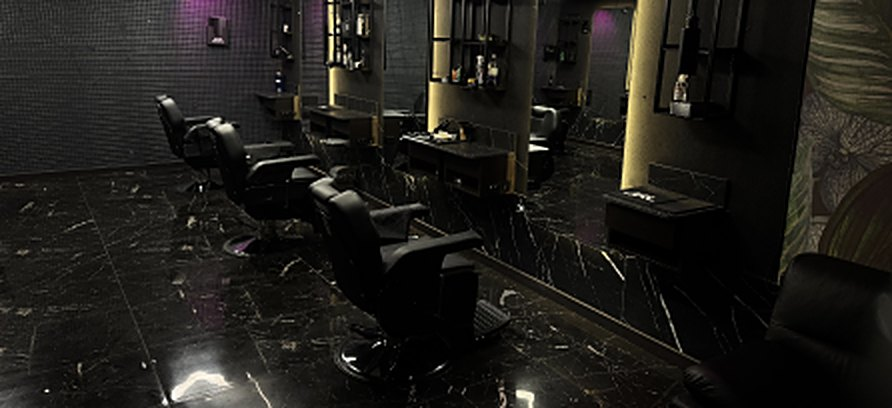

Як підібрати стрижку
під форму обличчя
Щоб підібрати чоловічу стрижку під форму обличчя, спершу варто визначити свій тип обличчя, адже саме від нього залежить, яка довжина й об'єм волосся виглядатимуть гармонійно. Правильно підібрана стрижка візуально вирівнює пропорції, підкреслює сильні риси та приховує те, що хочеться зробити менш помітним.
Багато чоловіків обирають стрижку випадково. Хтось побачив гарну зачіску в серіалі, хтось показав барберу фото футболіста, а хтось роками ходить з однаковою формою просто тому, що так звик. Іноді це спрацьовує, але частіше результат виходить «якимось не таким», і людина не до кінця розуміє чому. Насправді причина майже завжди одна. Стрижка, яка ідеально виглядає на одній людині, може зовсім не пасувати іншій, бо в них різні пропорції обличчя, різна щелепа, різний лоб і різна лінія вилиць.
Хороша новина в тому, що принципи підбору стрижки зовсім не складні. Їх легко зрозуміти, і після цього ви будете дивитися на будь-яку зачіску іншими очима. Нижче розповідаємо, як за кілька хвилин визначити форму свого обличчя вдома, які стрижки пасують кожному з шести основних типів, чого краще уникати і як борода допомагає завершити образ. Це ті самі принципи, якими барбери Злі Бороди користуються щодня, коли клієнт сідає в крісло і каже «зробіть щось, що мені личить».
Чому форма обличчя така важлива
Кожне обличчя має свої пропорції. Десь найширша частина припадає на вилиці, десь на щелепу, десь на лоб. Одні обличчя довгі й вузькі, інші майже однакові за шириною і довжиною. Зачіска працює як рамка для картини. Вона може або підкреслити найкращі риси, або, навпаки, акцентувати увагу на тому, що ви хотіли б зробити менш помітним.
Наприклад, об'ємна зачіска зверху додає обличчю кілька сантиметрів довжини. Якщо обличчя кругле, це чудово, бо воно візуально витягується і стає виразнішим. Але якщо обличчя і так видовжене, та сама зачіска зробить його ще довшим, і пропорції порушаться. Так само працює об'єм на боках, довжина чубчика, висота фейду, напрям укладки і навіть форма бороди.
Тому барбери завжди дивляться не на стрижку окремо, а на людину загалом. Мета не в тому, щоб зробити модну зачіску, а в тому, щоб людина виглядала гармонійно, впевнено і природно. Коли пропорції збалансовані, обличчя здається привабливішим, навіть якщо оточення не може пояснити, що саме змінилося.
Як визначити форму обличчя
Найпростіший спосіб це дзеркало і сантиметрова стрічка або навіть звичайна нитка, яку потім можна прикласти до лінійки. Зачешіть волосся назад, щоб воно не закривало лоб і скроні, станьте рівно перед дзеркалом при хорошому освітленні і тримайте голову прямо, без нахилу вперед чи назад. Якщо у вас є борода, намагайтеся відчувати під пальцями саму лінію щелепи, а не контур бороди, бо саме кістка визначає форму. Потім зробіть чотири заміри.
- Ширина лоба. Виміряйте лоб у найширшому місці, приблизно посередині між бровами і лінією росту волосся, від однієї скроні до іншої.
- Ширина вилиць. Знайдіть найбільш виступаючі точки вилиць, вони зазвичай розташовані трохи нижче зовнішніх кутиків очей, і виміряйте відстань між ними.
- Ширина щелепи. Виміряйте відстань від кута щелепи під вухом до центру підборіддя і помножте результат на два. Так ви отримаєте повну ширину нижньої частини обличчя.
- Довжина обличчя. Виміряйте відстань від лінії росту волосся посередині лоба до кінчика підборіддя. Якщо волосся вже почало відступати, орієнтуйтеся на ту лінію, де лоб природно переходить у волосяну частину.
Тепер порівняйте цифри між собою. Яка частина найширша, наскільки обличчя довше, ніж ширше, чи кута щелепа гостра, чи м'яка. Якщо довжина значно перевищує ширину, обличчя видовжене або овальне. Якщо цифри майже однакові, воно кругле або квадратне, і тоді вирішальну роль відіграє форма щелепи. Заокруглена щелепа вказує на кругле обличчя, чітка і кутаста на квадратне. Якщо найширшим виявився лоб, а підборіддя вузьке, це обличчя у формі серця. Якщо найширші вилиці, а лоб і щелепа помітно вужчі, перед вами ромб.
Є і ще простіший спосіб, коли під рукою немає стрічки. Сфотографуйте себе анфас із зачесаним назад волоссям, тримаючи камеру на рівні очей, а не знизу і не згори. Потім відкрийте фото в будь-якому редакторі і обведіть контур обличчя лінією. Коли ви бачите лише силует без очей, носа і волосся, форма стає набагато очевиднішою. Цей прийом добре допомагає тим, хто вагається між двома схожими типами.
Пам'ятайте, що ідеально «чистих» форм майже не буває. У більшості людей обличчя поєднує риси двох типів, наприклад овал з трохи ширшою щелепою або кругле обличчя з помітними вилицями. Це нормально. У такому разі орієнтуйтеся на ту ознаку, яка найбільше впадає в око, і поєднуйте поради для обох типів.

Стрижки для різних форм обличчя
Овальне обличчя
Овальне обличчя приблизно в півтора раза довше, ніж ширше. Лоб трохи ширший за підборіддя, вилиці злегка виступають, а лінія щелепи м'яка і плавна, без різких кутів. Таку форму вважають еталонною, бо вона збалансована сама по собі, і стрижці не потрібно нічого виправляти чи приховувати.
Власникам овального обличчя пощастило найбільше, адже їм пасує майже будь-яка стрижка. Класичний андеркат, кроп з текстурою, помпадур, квіф, бокс і напівбокс, канадка, сайд-парт, середня довжина з легкою недбалістю, і навіть довге волосся, зібране в пучок. Можна сміливо експериментувати з фейдами різної висоти, з довжиною зверху і з укладкою, бо обличчя витримає майже будь-яке рішення.
Єдине, чого варто уникати, це довгого густого чубчика, що повністю закриває лоб. Він не зіпсує образ кардинально, але приховає пропорції, які у вас і так у порядку, і обличчя може здатися коротшим і круглішим, ніж є насправді. Також обережно з надто високим об'ємом зверху, бо він здатний трохи видовжити овал. Найкраще правило для овалу просте. Обирайте стрижку, виходячи з типу волосся і способу життя, а форма обличчя дозволить вам практично все.
Кругле обличчя
Кругле обличчя має майже однакову ширину і довжину. Найширша частина припадає на вилиці, лінія росту волосся часто заокруглена, а щелепа м'яка, без виразних кутів. Таке обличчя зазвичай виглядає молодшим і дружнім, але іноді чоловікам хочеться додати йому більше чіткості й мужності. Головне завдання стрижки в цьому випадку полягає в тому, щоб візуально витягнути обличчя і створити відчуття кутів там, де їх від природи небагато.
Найкраще працює комбінація об'єму зверху і короткої довжини по боках. Помпадур, квіф, високий або середній фейд, андеркат з укладкою вгору, текстурований кроп з піднятою передньою частиною, асиметричний проділ. Вертикальний об'єм зверху додає обличчю довжини, а коротко підстрижені скроні прибирають зайву ширину на рівні вилиць. У результаті силует наближається до овалу, і обличчя виглядає стрункішим.
Чого краще уникати? Круглих стрижок у формі «шапочки», рівного чубчика на лоб, об'єму на боках і довгого волосся, яке закінчується на рівні щік. Усі ці варіанти повторюють і підсилюють округлість, через що обличчя здається ще ширшим. Також не найкращий вибір дуже коротка однакова довжина по всій голові, наприклад під одну насадку, бо вона не створює жодної вертикалі.
Борода тут найкращий помічник. Борода, трохи довша на підборідді і коротша на щоках, додає обличчю кутів і візуально подовжує нижню частину. Добре виглядає й акуратна борода з чітко окресленою лінією щік, яка створює ефект виразнішої щелепи. А от пишна кругла борода з великим об'ємом на щоках може зробити обличчя ще ширшим, тому її краще уникати.
Квадратне обличчя
У квадратного обличчя лоб, вилиці і щелепа приблизно однакової ширини, а кути щелепи чіткі і виразні. Довжина обличчя трохи більша за ширину або майже дорівнює їй. Це одна з наймужніших форм, і її варто підкреслювати, а не ховати. Сильна щелепа асоціюється з характером і впевненістю, тож стрижка має працювати на цей ефект.
Найкраще квадратному обличчю пасують короткі і середні класичні стрижки. Кру-кат, бокс, напівбокс, кроп з текстурою, сайд-парт, акуратний андеркат. Чіткі лінії і фейд по боках гармонують з кутастою щелепою і роблять образ зібраним. Якщо хочеться трохи більше довжини, добре виглядає текстурований верх з легкою недбалістю, бо він додає образу руху.
Чого уникати? Надто геометричних стрижок з плоским квадратним силуетом зверху, бо вони множать кути, і обличчя починає виглядати масивним. Не варто також відрощувати пишні боки, які розширюють нижню частину голови. Прямий густий чубчик теж зробить обличчя коротшим і важчим.
Якщо ж хочеться не підкреслити, а трохи пом'якшити риси, підійде легка текстура зверху, укладка з плавною хвилею і коротка акуратна борода з трохи заокругленою лінією підборіддя. Так обличчя збереже мужність, але стане м'якшим і привітнішим.
Видовжене (прямокутне) обличчя
Видовжене обличчя помітно довше, ніж ширше. Лоб, вилиці і щелепа приблизно однакові за шириною, лоб часто високий, а підборіддя може бути трохи витягнутим. Таке обличчя виглядає благородно і статечно, але стрижка тут має працювати у протилежному напрямі, ніж для круглого типу. Її завдання візуально «вкоротити» обличчя і додати йому ширини.
Найкраще працює середня довжина з невеликим об'ємом по боках. Чубчик або укладка вперед, класичний сайд-парт, кроп з бахромою на лоб, акуратна стрижка з довжиною зверху, яку укладають не вгору, а вбік. Боки краще залишати трохи довшими, без надто високого фейду, бо коротко вистрижені скроні звужують обличчя і роблять його ще довшим. Чубчик, що частково прикриває високий лоб, чудово врівноважує пропорції.
Чого уникати? Високого помпадура, квіфа і будь-якого великого об'єму зверху, бо вони додають ще кілька сантиметрів довжини. Так само не найкраща ідея поєднувати дуже короткі боки з довгим верхом. Цей контраст візуально витягує голову вгору, і обличчя здається вузьким.
Бороду власникам видовженого обличчя краще носити з невеликим об'ємом на щоках і не відпускати довгою на підборідді. Щетина середньої довжини або коротка повна борода додають ширини і роблять обличчя пропорційнішим. А от довга клиноподібна борода підкреслить витягнутість, тому її варто оминати.
Трикутне обличчя і обличчя-серце
Цю групу часто плутають, бо тут є два протилежні варіанти. Обличчя у формі серця, яке ще називають перевернутим трикутником, має широкий лоб і вузьке, іноді гостре підборіддя. Трикутне обличчя навпаки має вузький лоб і широку масивну щелепу. В обох випадках завдання стрижки однакове, врівноважити верхню і нижню частини, але способи протилежні.
Для широкого лоба і вузького підборіддя найкраще підходить середня довжина, укладка вбік, легкий чубчик, що частково прикриває лоб, і текстура замість прилизаного волосся. Варто уникати високого об'єму зверху і дуже коротких боків, бо вони ще більше розширюють верхню частину. Борода тут грає велику роль. Вона додає нижній частині обличчя ваги, розширює підборіддя і робить силует збалансованим. Добре виглядають повна борода середньої довжини або виразна щетина.
Для вузького лоба і широкої щелепи стратегія інша. Потрібен об'єм у верхній частині голови, який розширить лоб. Квіф, текстурований кроп, укладка з піднятою лінією біля лоба, середня довжина з об'ємом зверху. Боки краще не вистригати в нуль, щоб не створювати різкого контрасту з широкою щелепою. Борода має бути короткою і акуратною, без зайвого об'єму на кутах щелепи, інакше нижня частина обличчя стане ще важчою.
Ромбоподібне обличчя
У ромбоподібного обличчя найширша частина припадає на вилиці, а лоб і підборіддя помітно вужчі. Риси зазвичай гострі й виразні, підборіддя може бути загостреним. Ця форма трапляється рідше за інші, і вона дуже фотогенічна, якщо правильно підібрати стрижку.
Головне завдання полягає в тому, щоб додати ширини на рівні лоба і підборіддя, а вилиці залишити в тіні. Підходять середня довжина з текстурою, укладка вперед або вбік, фрінж, тобто легкий чубчик на лоб, класичний сайд-парт, а також стрижки з м'якою недбалою формою. Боки краще залишати трохи довшими, щоб не підкреслювати вилиці, а верх укладати так, щоб він частково закривав лоб або розширював його.
Чого уникати? Дуже коротких боків у поєднанні з великим об'ємом зверху і гладких зачісок, зачесаних назад. Такі варіанти відкривають вилиці і виставляють їх на перший план, через що обличчя здається ще гострішим і вужчим угорі та внизу.
Повна борода або щетина середньої довжини гарно розширює підборіддя і робить обличчя збалансованим. Особливо вдало виглядає борода, яка трохи об'ємніша в нижній частині, бо вона компенсує вузьке підборіддя і створює плавніший силует.
Борода і стрижка мають працювати разом
Стрижка відповідає за верхню частину обличчя, борода за нижню. Разом вони дозволяють скоригувати майже будь-які пропорції, і саме тому барбери завжди радять думати про них як про єдиний образ. Навіть ідеально підібрана стрижка може втратити половину ефекту, якщо борода неохайна або має невдалу форму. І навпаки, правильна борода здатна виправити те, з чим стрижка сама не впорається.
Ось кілька простих правил, які варто пам'ятати.
- Довжина на підборідді витягує обличчя. Борода, довша внизу і коротша на щоках, підходить для круглого і квадратного типу, бо додає вертикалі.
- Об'єм на щоках розширює обличчя. Такий варіант добре працює для видовженого і ромбоподібного типу, бо збалансовує вузький силует.
- Чіткий контур завжди виглядає охайніше. Лінія на щоках і на шиї, сформована барбером, робить бороду доглянутою, навіть якщо вона зовсім коротка. Природна лінія росту часто виглядає неохайно і розмиває форму обличчя.
- Перехід має бути плавним. Між скронею і бородою не повинно бути різкої сходинки. Коли фейд на скронях плавно переходить у щетину, образ виглядає цілісним і продуманим.
- Лінія шиї важлива не менше, ніж лінія щік. Якщо борода спускається занадто низько на шию, підборіддя втрачає чіткість. Правильна лінія проходить приблизно на два пальці вище кадика.
Що ще впливає на вибір стрижки
Форма обличчя головний орієнтир, але не єдиний. Хороший барбер завжди враховує ще кілька речей, і саме вони часто вирішують, чи буде стрижка виглядати добре не лише в день візиту, а й через два тижні.
Тип і густота волосся. Хвилясте і кучеряве волосся тримає об'єм саме по собі, тому з ним легко створити помпадур чи текстурований верх без великої кількості засобів. Пряме і тонке волосся потребує текстурування ножицями, правильного стайлінгу і часто коротшої довжини, щоб не виглядати пласким. Густе волосся дозволяє складніші форми й довжину, а рідке краще стригти коротше, бо так воно виглядає охайніше і густіше.
Лінія росту волосся. Залисини, високий лоб або вихори на маківці можуть суттєво змінити план. Іноді коротка стрижка з текстурою виглядає набагато краще, ніж спроба приховати залисини довжиною чи зачісуванням. Вихори ж диктують напрям укладки, і з ними краще не боротися, а використовувати їх.
Спосіб життя. Якщо на укладку щоранку є лише дві хвилини, варто обрати форму, яка добре лежить сама. Помпадур і квіф потребують фена, засобів і часу, а кроп, бокс чи напівбокс майже не вимагають зусиль. Якщо ви часто займаєтеся спортом, ходите в басейн або носите шолом, теж краще обирати практичніші стрижки.
Стиль одягу і робота. Стрижка має пасувати не тільки до обличчя, а й до того, як ви живете і в чому ходите. Класичний сайд-парт гармонійно виглядає з костюмом, текстурований кроп з худі і кросівками, а довга недбала укладка зі стилем кежуал. Коли зачіска і гардероб говорять однією мовою, образ виглядає цілісним.
Вік. З роками волосся часто стає тоншим, а риси обличчя змінюються. Стрижка, яка ідеально виглядала у двадцять, може потребувати корекції в сорок. Добра новина в тому, що правильно підібрана стрижка здатна зробити образ свіжішим і сучаснішим у будь-якому віці.
Часті помилки
Навіть знаючи свою форму обличчя, легко помилитися. Ось помилки, які барбери бачать найчастіше.
- Копіювати стрижку з фото без урахування себе. Зачіска на фото може бути зроблена на зовсім іншому типі волосся і для зовсім іншого обличчя. Фото корисне як орієнтир, але барбер має адаптувати його під вас.
- Додавати об'єм туди, де обличчя і так широке. Пишні боки на круглому обличчі або високий верх на видовженому ламають пропорції швидше, ніж будь-що інше.
- Забувати про бороду. Думати про стрижку окремо від бороди означає втрачати половину інструментів корекції.
- Зволікати з оновленням. Більшість чоловічих стрижок тримають форму три чотири тижні, далі пропорції «пливуть», і навіть найкраща стрижка починає виглядати неохайно.
- Боятися змін. Багато чоловіків роками носять одну й ту саму зачіску лише тому, що не наважуються спробувати іншу. Інколи одна сміливіша стрижка змінює образ настільки, що до старого вже не хочеться повертатися.
Часті запитання
Як зрозуміти форму обличчя без замірів?
Сфотографуйтеся анфас із зачесаним назад волоссям, тримаючи камеру на рівні очей. Потім обведіть контур обличчя на фото. Без деталей, лише за силуетом, найширша частина і загальна форма одразу стають помітними. Ще простіше спитати барбера, він визначить тип обличчя за кілька секунд.
Яка стрижка пасує всім?
Абсолютно універсальних стрижок немає, але кілька варіантів пасують більшості чоловіків. Це класичний напівбокс, кроп з текстурою і сайд-парт середньої довжини. Вони працюють майже з будь-якою формою обличчя, якщо правильно підібрати довжину зверху, висоту фейду і напрям укладки.
Чи можна носити бороду з круглим обличчям?
Так, і навіть варто. Борода, подовжена на підборідді і коротша на щоках, візуально витягує кругле обличчя і додає йому чітких ліній. Головне уникати пишного об'єму на щоках і обов'язково формувати чіткий контур.
Як часто потрібно оновлювати стрижку?
Короткі стрижки з фейдом варто оновлювати раз на два три тижні, бо саме на коротких боках відростання помітне найшвидше. Середню довжину достатньо коригувати раз на чотири шість тижнів. Бороду бажано підрівнювати разом зі стрижкою, щоб образ залишався цілісним.
Що робити, якщо форма обличчя змішана?
Таке буває дуже часто. Визначте ознаку, яка найбільше впадає в око, наприклад широкі вилиці або масивну щелепу, і орієнтуйтеся насамперед на неї. Барбер допоможе поєднати поради для двох типів так, щоб стрижка працювала саме на ваші пропорції.
Підберемо стрижку разом
Теорія допомагає зрозуміти напрям, але остаточне рішення найкраще приймати в кріслі барбера. Навіть знаючи свою форму обличчя, складно врахувати все одразу, тип волосся, вихори, густоту, бороду, стиль і звички. Досвідчений майстер бачить ці деталі з першого погляду і знає, як поєднати їх в один образ.
У Злі Бороди ми починаємо кожну стрижку з короткої консультації. Дивимося на форму обличчя, тип волосся і на те, як ви звикли укладатися, розпитуємо про роботу і стиль, а потім пропонуємо варіант, який пасуватиме саме вам. Після стрижки показуємо, як укладати волосся вдома, щоб результат тримався не лише в день візиту. Записуйтеся онлайн і приходьте, підберемо стрижку і бороду, з якими хочеться виходити з дому.
Записатися онлайн